Chapter 1 · Part 1 — Meow!
“It’s still here,” said Jack.
“It looks empty,” said Annie.
Jack and his seven-year-old sister up at a very tall oak tree. At the top of the tree was a tree house.
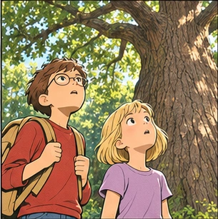
Late-morning sunlight lit the woods. It was almost time for lunch.
“Shhh!” said Jack. “What was that noise?”
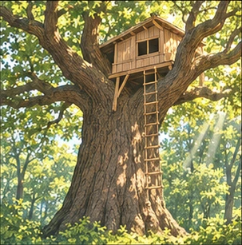
“What noise?”
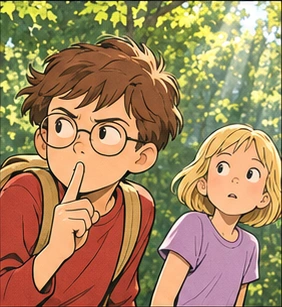
“I heard a noise,” Jack said. He looked around. “It sounded like someone coughing.”
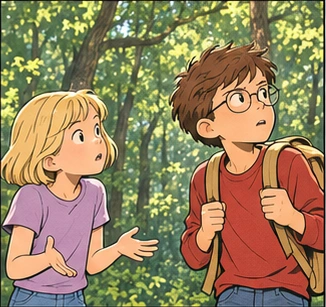
“I didn’t hear anything,” said Annie. “Come on. Let’s go up.”
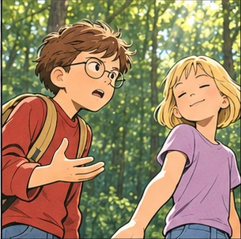
She grabbed onto the rope ladder and started climbing.
Jack over to a clump of . He pushed aside a small .
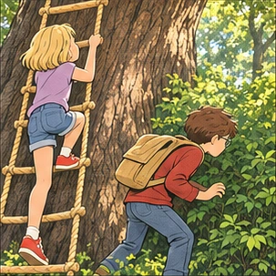
“Hello?” he said. “Anybody there?”
There was no answer.
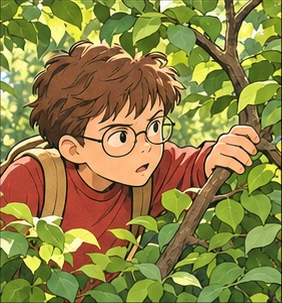
“Come on!” Annie called down. “The tree house looks the same as it did yesterday.”
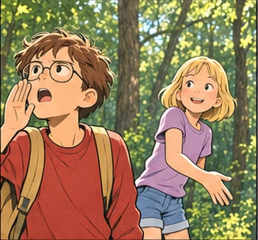
Jack still felt that someone was nearby. Could it be the person who’d put all the books in the tree house?
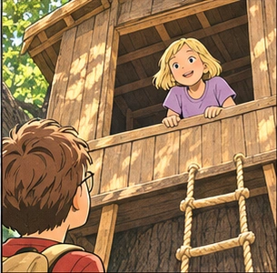
“Ja-ack!”
Jack over the top of the .
Was the mysterious person watching him now? The person whose name began with M?
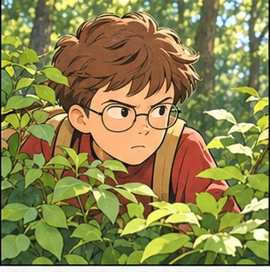
Maybe M wanted the gold back. The one Jack had found on their dinosaur adventure. Maybe M wanted the leather back. The one from the castle book.
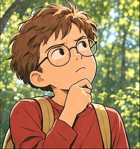
There was an M on the . And an M on the . But what did M stand for?
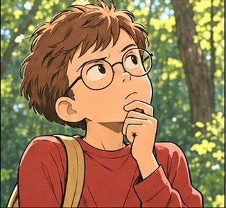
“Tomorrow I’ll bring everything back,” Jack said loudly.
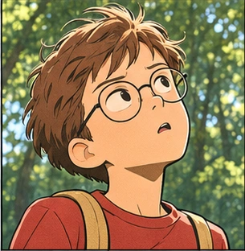
A swept through the woods. The leaves .
“Come on!” called Annie.
Jack went back to the big oak tree. He grabbed onto the rope ladder and climbed up.
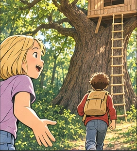
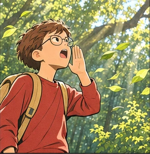
At the top he crawled through a hole in the wooden floor. He tossed down his backpack and pushed his glasses into place.
“Hmmm. Which book is it going to be today?” said Annie.
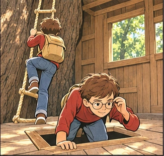
She was looking at the books around the tree house.
Annie picked up the book about castles.
“Hey, this isn’t wet anymore,” she said.
“Let me see.”
Jack took the book from her. He was amazed. It looked fine. Yesterday it had gotten soaked in a castle moat.
The castle book had taken Jack and Annie back to the time of knights.
Jack silently thanked the mysterious knight who had rescued them.
“Watch out!” warned Annie.
She waved a dinosaur book in Jack’s face.
“Put that away,” said Jack.